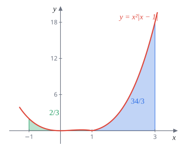
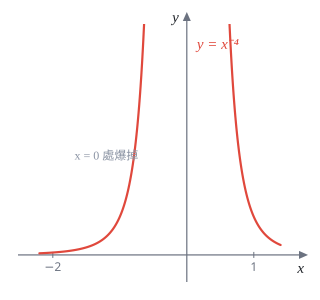
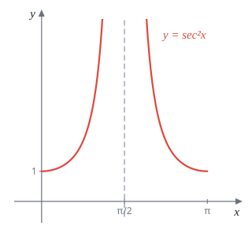
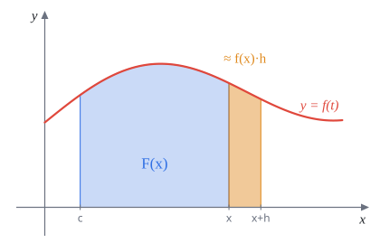

Week 10 不定積分與微積分基本定理
AP Calculus I（115 學年）Lecture Note 10 教學與題解
講義筆誤p.80 最後一題的提示：$\dfrac{2x^2+6x+2}{x^2+1}=2+\dfrac{4x}{x^2+1}$ 應為 $2+\dfrac{6x}{x^2+1}$（$2(x^2+1)=2x^2+2$，剩下的是 $6x$）。見題 22。
講義筆誤p.78「What is wrong with the equation?」的提示要你看 Theorem 9.6.1，但 Lecture Note 9 只到 9.5 節，沒有這個定理。這題該對照的是本週的 FTC I（定理 10.3.1）要求 $f$ 在 $[a,b]$ 上連續。見題 14。
上週用 Riemann 和算面積，連 $\int_0^1x^2\,dx$ 都要動用求和公式再取極限，很累。這週的主角是微積分基本定理（FTC）：積分和微分互為反運算。有了它，算定積分只要找到「哪個函數微分後是被積函數」，代上下限相減就好。
所以這週其實在練兩件事：(1) 把微分公式倒過來用，找反導函數；(2) 看到 $\int_{\cdots}^{x}$ 這種「上限是變數的積分」時，知道怎麼對它微分。
10.1 反導函數
定義 10.1.1若 $F'(x)=f(x)$，稱 $F(x)$ 是 $f(x)$ 的反導函數（anti-derivative）。
反導函數就是倒過來問：「誰微分會變成 $f$？」例如 $(x^3)'=3x^2$，所以 $x^3$ 是 $3x^2$ 的反導函數。但 $x^3+5$、$x^3-\pi$ 微分也是 $3x^2$，常數微分後消失了，所以答案不只一個。
定理 10.1.1若 $F$ 是 $f$ 在區間 $I$ 上的反導函數，反導函數不唯一。$f$ 在 $I$ 上的一般反導函數是 $F(x)+C$，$C$ 是任意常數。
定理 10.1.2若 $F,G$ 分別是 $f,g$ 在 $I$ 上的反導函數，則 $F\pm G$ 是 $f\pm g$ 的反導函數。
定理 10.1.2 只是把微分的線性倒過來：$(F\pm G)'=F'\pm G'=f\pm g$。注意乘法、除法、合成都沒有這麼簡單的倒過來規則，這正是積分比微分難的原因。下一題 (b) 就是典型的錯誤示範。
題 1(a) 求 $f(x)=e^{3x}$ 的反導函數。
(b) $f(x)=e^{x^2}$ 的反導函數是 $\dfrac{e^{x^2}}{2x}$ 嗎？把它微分回去看看。
(a) 連鎖律：$(e^{3x})'=3e^{3x}$，多了一個 $3$，除掉就好：$\left(\frac13e^{3x}\right)'=e^{3x}$。
(b) 這個猜法是「把 $e^{u}$ 的反導函數 $e^u$ 除以 $u'$」，對 $u=3x$ 有效，對 $u=x^2$ 呢？用商法則微分回去：
$$\left(\frac{e^{x^2}}{2x}\right)'=\frac{2xe^{x^2}\cdot2x-e^{x^2}\cdot2}{4x^2}=e^{x^2}\left(1-\frac1{2x^2}\right)\ne e^{x^2}.$$多出了 $-\frac{e^{x^2}}{2x^2}$。除以 $u'$ 的做法只在 $u'$ 是常數時才對，因為分母是常數時商法則不會多出項。事實上 $e^{x^2}$ 的反導函數寫不成初等函數。
(a) $\dfrac13e^{3x}+C$ (b) 不是
解題套路積分算完，微分回去檢查。這是唯一可靠的驗算方法，而且微分一定算得出來。
10.2 積分招式一：不定積分
定義 10.2.1$f(x)$ 的不定積分記作 $\displaystyle\int f(x)\,dx$，是 $f$ 的所有反導函數組成的集合。
實務上寫成 $\int f(x)\,dx=F(x)+C$。「招式一」就是把背過的微分公式整張倒過來：
$\int\frac1x\,dx$ 要加絕對值：$x\lt0$ 時 $\big(\ln(-x)\big)'=\frac{-1}{-x}=\frac1x$，所以 $\ln|x|$ 在兩側都對。再加上一條：$\int e^{kx}\,dx=\frac1ke^{kx}+C$（$k$ 是常數，題 1(a)）。
題 2求
(a) $\displaystyle\int\frac1{\sqrt{x^3}}\,dx$ (b) $\displaystyle\int\left(\frac1{\sqrt{1-x^2}}+2^x\right)dx$ (c) $\displaystyle\int\left(\frac1x+\frac1{1+x^2}\right)dx$ (d) $\displaystyle\int\tan^2x\,dx$
(a) 先改寫成冪次：$\frac1{\sqrt{x^3}}=x^{-3/2}$。$n=-\frac32$，$n+1=-\frac12$：
$$\int x^{-3/2}\,dx=\frac{x^{-1/2}}{-1/2}+C=-\frac2{\sqrt x}+C.$$(b) 兩項各自查表：$\sin^{-1}x+\dfrac{2^x}{\ln2}+C$。
(c) 同樣兩項查表：$\ln|x|+\tan^{-1}x+C$。
(d) $\tan^2x$ 不在表上，但 $\sec^2x$ 在。用 $\tan^2x=\sec^2x-1$：
$$\int(\sec^2x-1)\,dx=\tan x-x+C.$$(a) $-\dfrac2{\sqrt x}+C$ (b) $\sin^{-1}x+\dfrac{2^x}{\ln2}+C$ (c) $\ln|x|+\tan^{-1}x+C$ (d) $\tan x-x+C$
題 3若 $f(x)=\displaystyle\int e^{\pi x}\,dx$ 且 $f(0)=0$，求 $f(x)$。
$f(x)=\frac1\pi e^{\pi x}+C$。條件決定 $C$：$f(0)=\frac1\pi+C=0$，$C=-\frac1\pi$。
$f(x)=\dfrac1\pi e^{\pi x}-\dfrac1\pi$（與講義答案相同）
接下來兩題是「認出某個乘積的導數」。積法則 $(uv)'=u'v+uv'$ 倒過來看，被積函數若長成 $u'v+uv'$，答案就是 $uv$。
題 4求 $\displaystyle\int\left(\frac{\sin x}x+\cos x\ln x\right)dx$。（提示：求 $(\ln x\sin x)'$。）
積法則：$(\ln x\sin x)'=\frac1x\sin x+\ln x\cos x$，正好是被積函數。
$\sin x\ln x+C$（$x\gt0$）
題 5求 $\displaystyle\int x^{\sin x}\left(\frac{\sin x}x+\cos x\ln x\right)dx$。（提示：令 $y=x^{\sin x}$，求 $\dfrac{dy}{dx}$。）
對數微分（§5.4）：$\ln y=\sin x\ln x$，兩邊微分，右邊就是題 4 的結果：
$$\frac{y'}y=\frac{\sin x}x+\cos x\ln x\ \Longrightarrow\ y'=x^{\sin x}\left(\frac{\sin x}x+\cos x\ln x\right).$$這正是被積函數，所以積分就是 $y$ 本身。
$x^{\sin x}+C$
最後兩題是函數方程：只給 $f$ 滿足的關係式和一個導數值，要你求出 $f$。套路是用導數定義把 $f'(x)$ 算出來，再積分回去。
題 6$f(x)$ 對所有 $x,y\in\mathbb R$ 滿足 $f(x+y)=f(x)+f(y)+2xy$，且 $f'(0)=1$。求 $f(x)$。
先求 $f(0)$。代 $x=y=0$：$f(0)=2f(0)$，所以 $f(0)=0$。於是 $f'(0)=\displaystyle\lim_{h\to0}\frac{f(h)-f(0)}h=\lim_{h\to0}\frac{f(h)}h=1$。
用定義求 $f'(x)$。把 $f(x+h)=f(x)+f(h)+2xh$ 代進去：
$$f'(x)=\lim_{h\to0}\frac{f(x+h)-f(x)}h=\lim_{h\to0}\frac{f(h)+2xh}h=\lim_{h\to0}\frac{f(h)}h+2x=1+2x.$$積分回去。$f(x)=x+x^2+C$，再用 $f(0)=0$ 得 $C=0$。
驗算：$(x+y)+(x+y)^2=x+x^2+y+y^2+2xy$，成立。
$f(x)=x^2+x$
題 7求所有對 $x,y\in\mathbb R$ 滿足 $f(x+y)=f(x)f(y)$ 且 $f'(0)=2$ 的函數 $f(x)$。
先求 $f(0)$。代 $x=y=0$：$f(0)=f(0)^2$，$f(0)=0$ 或 $1$。若 $f(0)=0$，代 $y=0$ 得 $f(x)=f(x)f(0)=0$ 對所有 $x$ 成立，$f$ 是零函數，$f'(0)=0\ne2$，不合。所以 $f(0)=1$，$f'(0)=\displaystyle\lim_{h\to0}\frac{f(h)-1}h=2$。
用定義求 $f'(x)$。
$$f'(x)=\lim_{h\to0}\frac{f(x)f(h)-f(x)}h=f(x)\lim_{h\to0}\frac{f(h)-1}h=2f(x).$$解 $f'=2f$。這種「導數等於自己的倍數」的式子，乘上 $e^{-2x}$ 湊成乘積的導數：
$$\big(f(x)e^{-2x}\big)'=f'(x)e^{-2x}-2f(x)e^{-2x}=0.$$導數為 $0$ 的函數是常數（定理 10.2.1 用的同一件事），$f(x)e^{-2x}=C$，$f(x)=Ce^{2x}$。由 $f(0)=1$ 得 $C=1$。
$f(x)=e^{2x}$（唯一一個）
解題套路$f'=kf$ 就乘 $e^{-kx}$，得 $(fe^{-kx})'=0$，所以 $f=Ce^{kx}$。§10.5 會一直用到。
10.2.1 不定積分的唯一性
定理 10.2.1不定積分在相差一個常數的意義下唯一：若 $F,G$ 都是 $h$ 的反導函數，則 $F-G$ 是常數。
證明：令 $k=F-G$，則 $k'=h-h=0$。由均值定理（§6.2），區間上導數處處為 $0$ 的函數是常數。
這個定理保證「$+C$」已經包含了所有答案。但不同算法得到的式子可能長得不一樣，下一題示範。
題 8求 $\displaystyle\int\sin(2x)\,dx$。
方法一。$(\cos2x)'=-2\sin2x$，所以 $\left(-\frac12\cos2x\right)'=\sin2x$：
$$\int\sin(2x)\,dx=-\frac12\cos2x+C_1.$$方法二。$\sin2x=2\sin x\cos x$，而連鎖律給 $(\sin^2x)'=2\sin x\cos x$：
$$\int\sin(2x)\,dx=\sin^2x+C_2.$$兩個答案一樣嗎？用 $\cos2x=1-2\sin^2x$：
$$-\frac12\cos2x+C_1=-\frac12+\sin^2x+C_1,$$只差常數 $-\frac12$，令 $C_2=C_1-\frac12$ 就相同。
$-\dfrac12\cos2x+C$，或等價的 $\sin^2x+C$
你的答案和解答長得不一樣，不一定是錯。先微分回去檢查；或者看兩者是否差在某個恆等式：三角恆等式、反三角恆等式（例如 $\sin^{-1}x+\cos^{-1}x=\frac\pi2$）、$\ln(kx)=\ln k+\ln x$、展開與帶分數（$\frac{x+1}x=1+\frac1x$）。
10.3 微積分基本定理 I：淨變化
定理 10.3.1（FTC I）若 $f$ 在 $[a,b]$ 上連續，且 $F'=f$，則
$$\int_a^bf(x)\,dx=F(b)-F(a).$$右邊常寫成 $F(x)\Big|_a^b$。直覺：$f=F'$ 是 $F$ 的變化率，把每一小段的「變化率 $\times$ 時間」加起來，就是 $F$ 從 $a$ 到 $b$ 的總變化量。速度積分等於位移，就是這個意思。講義的口訣：先微分再積分，什麼都沒發生，$\int_a^bF'(x)\,dx=F(b)-F(a)$。
注意定理要求 $f$ 在整個 $[a,b]$ 上連續，題 14 會看到忘了檢查的後果。證明放在 §10.6。
用上週的題目驗證一下：$\int_0^1x^2\,dx=\frac{x^3}3\Big|_0^1=\frac13$，跟 Riemann 和算了半天的結果一樣。
題 9計算 $\displaystyle\int_0^1\left(-7x^2+3\sqrt x+\frac4{x^2+1}\right)dx$。
逐項找反導函數：$-7x^2\to-\frac73x^3$，$3x^{1/2}\to3\cdot\frac23x^{3/2}=2x^{3/2}$，$\frac4{x^2+1}\to4\tan^{-1}x$。
$$\left[-\frac73x^3+2x^{3/2}+4\tan^{-1}x\right]_0^1=-\frac73+2+4\cdot\frac\pi4-0=\pi-\frac13.$$$\pi-\dfrac13$
題 10計算 $\displaystyle\int_0^{\pi/4}\left(e^{2x}+\sin(3x)+(3x+1)^4\right)dx$。
三項都是「裡面是 $kx+b$」的形式，反導函數照常寫、再除以 $k$（微分回去時連鎖律會乘回 $k$）：
$$\int e^{2x}dx=\frac{e^{2x}}2,\quad\int\sin3x\,dx=-\frac{\cos3x}3,\quad\int(3x+1)^4dx=\frac{(3x+1)^5}{5\cdot3}.$$代上下限：
- $\dfrac{e^{\pi/2}-1}2$
- $-\dfrac{\cos(3\pi/4)}3+\dfrac{\cos0}3=\dfrac{\sqrt2/2}3+\dfrac13=\dfrac{2+\sqrt2}6$
- $\dfrac{(3\pi/4+1)^5-1}{15}$
$\dfrac{e^{\pi/2}-1}2+\dfrac{2+\sqrt2}6+\dfrac{(1+\frac{3\pi}4)^5-1}{15}$（約 $30.80$）
題 11計算 $\displaystyle\int_{-1}^3x^2|x-1|\,dx$。
絕對值沒有直接的反導函數，先在 $x=1$ 拆開，各段把絕對值拿掉：
$$|x-1|=\begin{cases}1-x, & x\lt1\\ x-1, & x\ge1\end{cases}$$$[-1,1]$ 上：
$$\int_{-1}^1(x^2-x^3)\,dx=\left[\frac{x^3}3-\frac{x^4}4\right]_{-1}^1=\left(\frac13-\frac14\right)-\left(-\frac13-\frac14\right)=\frac23.$$$[1,3]$ 上：
$$\int_1^3(x^3-x^2)\,dx=\left[\frac{x^4}4-\frac{x^3}3\right]_1^3=\left(\frac{81}4-9\right)-\left(\frac14-\frac13\right)=\frac{34}3.$$$\dfrac23+\dfrac{34}3=12$

題 12若 $f(x)=x^2+2x+\displaystyle\int_0^2f(x)\,dx-\frac{29}3$，求 $f(x)$。
關鍵：$\int_0^2f(x)\,dx$ 是一個數，不是函數。令它為 $k$，則 $f(x)=x^2+2x+k-\frac{29}3$。兩邊從 $0$ 積到 $2$：
$$k=\int_0^2(x^2+2x)\,dx+\left(k-\frac{29}3\right)\cdot2=\frac83+4+2k-\frac{58}3=2k-\frac{38}3.$$解得 $k=\frac{38}3$，$f(x)=x^2+2x+\frac{38}3-\frac{29}3=x^2+2x+3$。
驗算：$\int_0^2(x^2+2x+3)\,dx=\frac83+4+6=\frac{38}3$，再減 $\frac{29}3$ 得 $3$，對。
$f(x)=x^2+2x+3$
題 13計算
(a) $\displaystyle\int_0^2x(2+x^5)\,dx$ (b) $\displaystyle\int_1^2\frac{4+x^2}{x^3}\,dx$ (c) $\displaystyle\int_1^5\lfloor x\rfloor x^2\,dx$
(d)（很難）$\displaystyle\int_1^2\left(\frac{x-1}{x+1}+\frac2{(x+1)^2}\right)e^x\,dx$。提示：$f(x)=\frac{x-1}{x+1}$，求 $f'(x)$。
(a) 先展開成冪次：$\displaystyle\int_0^2(2x+x^6)\,dx=\left[x^2+\frac{x^7}7\right]_0^2=4+\frac{128}7=\frac{156}7$。
(b) 先拆開：$\frac{4+x^2}{x^3}=4x^{-3}+\frac1x$。
$$\left[-\frac2{x^2}+\ln x\right]_1^2=\left(-\frac12+\ln2\right)-(-2)=\frac32+\ln2.$$(c) $\lfloor x\rfloor$（講義寫 $[[x]]$）在每個 $[k,k+1)$ 上是常數 $k$，所以一段一段積：
$$\int_k^{k+1}kx^2\,dx=k\cdot\frac{(k+1)^3-k^3}3.$$$k=1,2,3,4$ 時分別是 $\frac{7}3$、$\frac{2\cdot19}3$、$\frac{3\cdot37}3$、$\frac{4\cdot61}3$，加起來 $\frac{7+38+111+244}3=\frac{400}3$。（端點 $x=5$ 只有一個點，不影響積分。）
(d) 先照提示算：
$$f'(x)=\frac{(x+1)-(x-1)}{(x+1)^2}=\frac2{(x+1)^2}.$$所以被積函數是 $\big(f(x)+f'(x)\big)e^x$。這正是 $f(x)e^x$ 用積法則微分的結果：$(fe^x)'=f'e^x+fe^x$。
$$\int_1^2\big(f(x)e^x\big)'\,dx=\frac{x-1}{x+1}e^x\Big|_1^2=\frac13e^2-0=\frac{e^2}3.$$(a) $\dfrac{156}7$ (b) $\dfrac32+\ln2$ (c) $\dfrac{400}3$ (d) $\dfrac{e^2}3$
解題套路看到 $(\text{某函數}+\text{它的導數})\cdot e^x$，答案就是 $\text{某函數}\cdot e^x$。
題 14下面的計算錯在哪裡？
(a) $\displaystyle\int_{-2}^1x^{-4}\,dx=\frac{-x^{-3}}{-3}\Big|_{-2}^1=-\frac38$ (b) $\displaystyle\int_0^\pi\sec^2x\,dx=\tan x\Big|_0^\pi=0$
先用常識：兩個被積函數都是正的（$x^{-4}\gt0$、$\sec^2x\ge1$），積分卻得到負數和 $0$，一定有問題。
(a) $x^{-4}$ 在 $x=0$ 沒有定義，而 $0\in[-2,1]$。FTC I 要求 $f$ 在整個 $[a,b]$ 上連續，條件不成立，不能直接代上下限。事實上 $x\to0$ 時 $x^{-4}\to\infty$，這塊面積是無限大。
（順帶一提，題目寫的反導函數 $\frac{-x^{-3}}{-3}$ 多了一個負號，正確是 $\frac{x^{-3}}{-3}$；不過 $-\frac38$ 是用正確的式子代出來的值。重點在連續性，反導函數寫對也救不了。）
(b) $\sec^2x=\frac1{\cos^2x}$ 在 $x=\frac\pi2$ 沒有定義，$\frac\pi2\in[0,\pi]$，同樣不能用 FTC I。$\tan x$ 在 $\frac\pi2$ 斷開，從 $0$ 衝到 $+\infty$ 再從 $-\infty$ 回到 $0$，代端點相減把中間的爆炸抹掉了。
兩題的被積函數都在區間內有不連續點（$x=0$、$x=\frac\pi2$），不滿足 FTC I 的條件


10.4 微積分基本定理 II
FTC I 說「先微分再積分，回到原處」。FTC II 是反方向：先積分再微分，也回到原處。
定理 10.4.1（FTC II）$f$ 在 $[a,b]$ 上連續，固定 $c\in[a,b]$，定義
$$F(x)=\int_c^xf(t)\,dt.$$則 $F$ 在 $[a,b]$ 上連續、在 $(a,b)$ 上可微，且
$$F'(x)=\frac{d}{dx}\int_c^xf(t)\,dt=f(x).$$$F(x)$ 是「從 $c$ 到 $x$ 累積的面積」。$x$ 往右多走一小步 $h$，面積多出一條寬 $h$、高約 $f(x)$ 的細長條，所以 $F(x+h)-F(x)\approx f(x)\,h$，除以 $h$ 就得到 $F'(x)=f(x)$。累積面積增加的速度，就是當下那條邊的高度。

上下限都是 $x$ 的函數時，搭配連鎖律：
Leibniz 積分法則$F(x)=\displaystyle\int_{k(x)}^{h(x)}f(t)\,dt$，則
$$F'(x)=f\big(h(x)\big)h'(x)-f\big(k(x)\big)k'(x).$$口訣：上限代進去乘上限的導數，減掉下限代進去乘下限的導數。理由：令 $G(u)=\int_c^uf(t)\,dt$，則 $F(x)=G(h(x))-G(k(x))$，用 FTC II 和連鎖律微分就是上式。被積函數裡的變數是 $t$，跟 $x$ 無關；如果被積函數裡也有 $x$，要先提出來（題 17）。
題 15求 $\dfrac{d}{dx}\displaystyle\int_0^x\cos(t^2)\,dt$。
直接套 FTC II，把 $t$ 換成 $x$。$\cos(t^2)$ 的反導函數寫不出來，但不需要。
$\cos(x^2)$
題 16$g(x)=\displaystyle\int_x^{2x^3}\frac{e^t}{2+t}\,dt$，求 $g'(1)$。
Leibniz 法則，$h(x)=2x^3$、$k(x)=x$：
$$g'(x)=\frac{e^{2x^3}}{2+2x^3}\cdot6x^2-\frac{e^x}{2+x}\cdot1.$$代 $x=1$：$\dfrac{e^2}4\cdot6-\dfrac e3=\dfrac{3e^2}2-\dfrac e3$。
$g'(1)=\dfrac{3e^2}2-\dfrac e3$
題 17求 $\dfrac{d}{dx}\displaystyle\int_0^{2x}\frac{x^2}{\sqrt{1+t^2}}\,dt$。
陷阱：被積函數裡有 $x$。對 $t$ 積分時 $x^2$ 是常數，先提出來：
$$\int_0^{2x}\frac{x^2}{\sqrt{1+t^2}}\,dt=x^2\int_0^{2x}\frac{dt}{\sqrt{1+t^2}}.$$現在是兩個 $x$ 的函數相乘，用積法則；後一個因子用 Leibniz 法則，導數是 $\frac1{\sqrt{1+4x^2}}\cdot2$：
$$2x\int_0^{2x}\frac{dt}{\sqrt{1+t^2}}+x^2\cdot\frac2{\sqrt{1+4x^2}}.$$如果直接把 $t=2x$ 代進被積函數乘 $2$，會漏掉第一項。
$2x\displaystyle\int_0^{2x}\frac{dt}{\sqrt{1+t^2}}+\frac{2x^2}{\sqrt{1+4x^2}}$
題 18$H(x)=\displaystyle\int_0^{2x}\sin\!\left(\frac{\pi(t^2+1)}3\right)dt$，求 $y=H(x)$ 在 $x=0$ 的切線方程式。
切點：$H(0)=\int_0^0(\cdots)=0$（上下限相同，積分為 $0$）。
斜率：$H'(x)=\sin\!\left(\frac{\pi(4x^2+1)}3\right)\cdot2$，$H'(0)=2\sin\frac\pi3=\sqrt3$。
$y=\sqrt3\,x$
題 19求 $\displaystyle\lim_{x\to0}\frac{\int_0^x\cos(t^2)\,dt}x$。（講義提示用羅必達法則。）
令 $F(x)=\int_0^x\cos(t^2)\,dt$，$F(0)=0$。所求就是
$$\lim_{x\to0}\frac{F(x)-F(0)}{x-0}=F'(0)=\cos(0^2)=1.$$只用導數定義和 FTC II，不需要羅必達。
$1$
羅必達法則超出範圍的做法：分子分母都 $\to0$，各自微分得 $\frac{\cos(x^2)}1\to1$。結果相同，但上面的做法更直接。
題 20$F:(-1,\infty)\to\mathbb R$，$F(x)=\displaystyle\int_x^{\frac{1-x}{1+x}}\frac{\tan^{-1}t}{1+t}\,dt$。
(a) 求 $F(\sqrt2-1)$。(b) 證明 $F(x)=-\dfrac\pi4\ln(1+x)+C$。(c) 求 $F(0)$。
記 $u(x)=\frac{1-x}{1+x}$。
(a) $x=\sqrt2-1$ 時 $1+x=\sqrt2$、$1-x=2-\sqrt2$，
$$u=\frac{2-\sqrt2}{\sqrt2}=\sqrt2-1=x.$$上下限相同，$F(\sqrt2-1)=0$。
(b) 先準備：$u'=\frac{-(1+x)-(1-x)}{(1+x)^2}=\frac{-2}{(1+x)^2}$，$1+u=\frac2{1+x}$。Leibniz 法則：
$$F'(x)=\frac{\tan^{-1}u}{1+u}\cdot u'-\frac{\tan^{-1}x}{1+x}=\tan^{-1}u\cdot\frac{1+x}2\cdot\frac{-2}{(1+x)^2}-\frac{\tan^{-1}x}{1+x}=-\frac{\tan^{-1}u+\tan^{-1}x}{1+x}.$$關鍵一步：$\tan^{-1}\frac{1-x}{1+x}+\tan^{-1}x=\frac\pi4$。令 $\theta=\tan^{-1}x$，由 $x\gt-1$ 得 $\theta\in\left(-\frac\pi4,\frac\pi2\right)$。和角公式
$$\tan\!\left(\frac\pi4-\theta\right)=\frac{1-\tan\theta}{1+\tan\theta}=\frac{1-x}{1+x},$$而 $\frac\pi4-\theta\in\left(-\frac\pi4,\frac\pi2\right)$ 落在 $\tan^{-1}$ 的值域 $\left(-\frac\pi2,\frac\pi2\right)$ 內，所以 $\tan^{-1}\frac{1-x}{1+x}=\frac\pi4-\theta$。
於是 $F'(x)=-\dfrac{\pi}{4(1+x)}$。又 $\left(-\frac\pi4\ln(1+x)\right)'=-\frac{\pi}{4(1+x)}$，兩者導數相同，由定理 10.2.1 相差常數：$F(x)=-\frac\pi4\ln(1+x)+C$。
(c) 用 (a) 定 $C$：$0=-\frac\pi4\ln\sqrt2+C$，$C=\frac\pi4\cdot\frac12\ln2=\frac{\pi\ln2}8$。$F(0)=-\frac\pi4\ln1+C=C$。
(a) $0$ (c) $F(0)=\displaystyle\int_0^1\frac{\tan^{-1}t}{1+t}\,dt=\frac{\pi\ln2}8$
(c) 的意義：$\frac{\tan^{-1}t}{1+t}$ 的反導函數寫不出來，直接算 $\int_0^1$ 算不動。這題繞道把它變成「上限是變數的積分」，靠微分求出整個函數，再代 $x=0$。
對數技巧
定理 10.4.2（Log-trick）$\displaystyle\int\frac{f'(x)}{f(x)}\,dx=\ln|f(x)|+C$。
就是 $\big(\ln|f(x)|\big)'=\frac{f'(x)}{f(x)}$ 倒過來。看到分子是分母的導數（或差個常數倍），答案就是 $\ln|\text{分母}|$。
題 21求 (a) $\displaystyle\int\frac x{1-x^2}\,dx$ (b) $\displaystyle\int\tan x\,dx$ (c) $\displaystyle\int\sec x\,dx$
(a) 分母 $1-x^2$ 的導數是 $-2x$，分子是 $x$，差常數 $-\frac12$：
$$\int\frac x{1-x^2}\,dx=-\frac12\int\frac{-2x}{1-x^2}\,dx=-\frac12\ln|1-x^2|+C.$$(b) $\tan x=\frac{\sin x}{\cos x}$，分母 $\cos x$ 的導數是 $-\sin x$：
$$\int\tan x\,dx=-\int\frac{-\sin x}{\cos x}\,dx=-\ln|\cos x|+C=\ln|\sec x|+C.$$(c) 這題要先湊。上下同乘 $\sec x+\tan x$：
$$\int\sec x\cdot\frac{\sec x+\tan x}{\sec x+\tan x}\,dx=\int\frac{\sec^2x+\sec x\tan x}{\sec x+\tan x}\,dx.$$分母 $\sec x+\tan x$ 的導數是 $\sec x\tan x+\sec^2x$，正好是分子。
(a) $-\dfrac12\ln|1-x^2|+C$ (b) $-\ln|\cos x|+C$ (c) $\ln|\sec x+\tan x|+C$
題 22求 $\displaystyle\int\frac{2x^2+6x+2}{x^2+1}\,dx$。（講義提示寫 $2+\frac{4x}{x^2+1}$，應為 $2+\frac{6x}{x^2+1}$，見頁首。）
分子次數不低於分母，先做除法（帶分數）：$2x^2+6x+2=2(x^2+1)+6x$，所以
$$\frac{2x^2+6x+2}{x^2+1}=2+\frac{6x}{x^2+1}=2+3\cdot\frac{2x}{x^2+1}.$$第二項分子是分母的導數（的 $3$ 倍），用 log-trick（$x^2+1\gt0$，絕對值可省）：
$$\int\left(2+3\cdot\frac{2x}{x^2+1}\right)dx=2x+3\ln(x^2+1)+C.$$$2x+3\ln(x^2+1)+C$
10.5 雜題：積分方程
這節的題目都長成「$f$ 出現在積分裡面」。共同套路：
解題套路(1) 兩邊對 $x$ 微分，用 FTC II 把積分拿掉，得到 $f$ 和 $f'$ 的關係；(2) 解出 $f$（通常會有一個常數 $C$）；(3) 代一個讓積分變成 $0$ 的值（$x$ 等於積分下限）決定 $C$。最後一步最常被忘記。
題 23求連續函數 $f(x)$ 與常數 $a$，使得對所有 $x\gt0$，$6+\displaystyle\int_a^x\frac{f(t)}t\,dt=2\sqrt x$。
微分。兩邊對 $x$ 微分：$\dfrac{f(x)}x=\dfrac1{\sqrt x}$，所以 $f(x)=\sqrt x$。
代 $x=a$。積分變成 $0$：$6=2\sqrt a$，$a=9$。
$f(x)=\sqrt x$，$a=9$
題 24$f,g$ 連續，且 $f(x)=3+\displaystyle\int_0^xg(t)\,dt$、$g(x)=\displaystyle\int_0^xf(t)\,dt-1$。證明對所有實數 $x$，$f(x)^2-g(x)^2=8$。
由 FTC II，$f'=g$、$g'=f$。令 $h(x)=f(x)^2-g(x)^2$：
$$h'(x)=2ff'-2gg'=2fg-2gf=0.$$所以 $h$ 是常數。代 $x=0$：$f(0)=3$、$g(0)=-1$，$h(0)=9-1=8$。因此 $h(x)=8$ 對所有 $x$ 成立。
得證
要證明某個式子是常數，就微分證它的導數是 $0$，再代一個好算的點求出那個常數。
題 25$f$ 連續，且對所有 $x\ge1$，$xf(x)=3x^4-2x^3+x^2+\displaystyle\int_1^xf(t)\,dt$。求 $f(x)$。
右邊由 FTC II 可微，所以 $f(x)=\frac{\text{右邊}}x$ 也可微。兩邊微分，左邊用積法則：
$$f(x)+xf'(x)=12x^3-6x^2+2x+f(x)\ \Longrightarrow\ f'(x)=12x^2-6x+2.$$積分：$f(x)=4x^3-3x^2+2x+C$。
代 $x=1$（積分變成 $0$）：$f(1)=3-2+1=2$，而 $f(1)=4-3+2+C=3+C$，所以 $C=-1$。
$f(x)=4x^3-3x^2+2x-1$（與講義答案相同）
題 26求所有導數連續的 $f:\mathbb R\to\mathbb R$，使得對所有 $a\in\mathbb R$，$f(a)^2=1990+\displaystyle\int_0^a\left(f(x)^2+f'(x)^2\right)dx$。
微分。兩邊對 $a$ 微分（被積函數連續，FTC II 適用）：
$$2f(a)f'(a)=f(a)^2+f'(a)^2\ \Longrightarrow\ \big(f(a)-f'(a)\big)^2=0.$$所以 $f'=f$ 處處成立。
解 $f'=f$。$\big(f(x)e^{-x}\big)'=(f'-f)e^{-x}=0$，$f(x)=Ce^x$。
代 $a=0$。$f(0)^2=1990$，$C^2=1990$，$C=\pm\sqrt{1990}$。
驗算：$f=Ce^x$ 時右邊 $=1990+\int_0^a2C^2e^{2x}dx=1990+C^2(e^{2a}-1)=C^2e^{2a}=f(a)^2$，成立。
$f(x)=\pm\sqrt{1990}\,e^x$（與講義答案相同）
題 27$f$ 可微，對所有 $x$ 有 $f(x)\gt-1$，且 $f(x)=x^3+\displaystyle\int_0^x3t^2f(t)\,dt$。求 $f(x)$。提示：$\displaystyle\int\frac{f'(t)}{1+f(t)}\,dt=\ln(1+f(x))+C$。
微分。$f'(x)=3x^2+3x^2f(x)=3x^2\big(1+f(x)\big)$。
分離。$1+f\gt0$，可以除過去：$\dfrac{f'(x)}{1+f(x)}=3x^2$。兩邊積分，左邊用 log-trick（$1+f\gt0$ 不用絕對值）：
$$\ln\big(1+f(x)\big)=x^3+C.$$代 $x=0$。原式給 $f(0)=0$，$\ln1=0=C$。所以 $1+f(x)=e^{x^3}$。
$f(x)=e^{x^3}-1$
題 28$f,g$ 在 $[a,b]$ 上連續。證明存在 $c\in[a,b]$ 使得
$$g(c)\int_a^cf(x)\,dx-f(c)\int_c^bg(x)\,dx=0.$$提示：令 $F(x)=\displaystyle\int_a^xf(t)\,dt\int_x^bg(t)\,dt$。
「存在 $c$ 使某式 $=0$」，而某式像是乘積的導數，就想到 Rolle 定理（§6.2）。
端點值。$F(a)=\int_a^af\cdot(\cdots)=0$，$F(b)=(\cdots)\cdot\int_b^bg=0$。
可用 Rolle。由 FTC II，$\int_a^xf$ 與 $\int_x^bg=-\int_b^xg$ 都在 $[a,b]$ 連續、$(a,b)$ 可微，乘積 $F$ 也是。Rolle 定理給出 $c\in(a,b)$ 使 $F'(c)=0$。
算 $F'$。積法則，第二個因子的導數是 $-g(x)$（變數在下限）：
$$F'(x)=f(x)\int_x^bg(t)\,dt-g(x)\int_a^xf(t)\,dt.$$$F'(c)=0$ 兩邊乘 $-1$，正是要證的式子。
得證（而且 $c$ 可取在開區間 $(a,b)$ 內）
10.6 兩個 FTC 的證明（*）延伸
題 29$f$ 在 $[a,b]$ 上連續，$F(x)=\displaystyle\int_a^xf(t)\,dt$。證明 $F$ 在 $(a,b)$ 上可微且 $F'(x)=f(x)$（FTC II）；並由此證明若 $G'=f$，則 $\int_a^bf=G(b)-G(a)$（FTC I）。講義把 $h\lt0$ 的情形留作練習。
想法就是上面那張細長條的圖：證明 $\frac{F(x+h)-F(x)}h$ 和 $f(x)$ 的差會被夾到 $0$。
$h\gt0$。由可加性，$F(x+h)-F(x)=\int_x^{x+h}f(t)\,dt$。又 $f(x)=\frac1h\int_x^{x+h}f(x)\,dt$（常數積分等於常數乘長度）。相減：
$$\left|\frac{F(x+h)-F(x)}h-f(x)\right|=\frac1h\left|\int_x^{x+h}\big(f(t)-f(x)\big)dt\right|\le\frac1h\int_x^{x+h}|f(t)-f(x)|\,dt\le\max_{x\le t\le x+h}|f(t)-f(x)|.$$這裡用了 $\left|\int g\right|\le\int|g|$，以及「被積函數不超過最大值 $\Rightarrow$ 積分不超過最大值乘長度」（§9.4.2 的性質）。$f$ 連續，$h\to0^+$ 時 $t$ 被擠到 $x$，最大值 $\to0$。由夾擠定理，右導數是 $f(x)$。
$h\lt0$（練習）。令 $h=-k$，$k\gt0$。這時 $F(x+h)-F(x)=-\int_{x-k}^xf(t)\,dt$，除以 $h=-k$：
$$\frac{F(x+h)-F(x)}h=\frac1k\int_{x-k}^xf(t)\,dt.$$和上面完全一樣的估計，只是區間換成 $[x-k,x]$：
$$\left|\frac1k\int_{x-k}^xf(t)\,dt-f(x)\right|\le\frac1k\int_{x-k}^x|f(t)-f(x)|\,dt\le\max_{x-k\le t\le x}|f(t)-f(x)|\ \xrightarrow{\ k\to0^+\ }\ 0.$$左右導數都是 $f(x)$，所以 $F'(x)=f(x)$。
推出 FTC I。$G'=f=F'$，由定理 10.2.1，$G(x)=F(x)+C$。代 $x=a$：$G(a)=F(a)+C=0+C$，所以 $C=G(a)$，$F(x)=G(x)-G(a)$。代 $x=b$：
$$\int_a^bf(t)\,dt=F(b)=G(b)-G(a).$$得證
本週必背總整理
- 反導函數：$F'=f$；答案相差常數，不定積分記得 $+C$；積完微分回去檢查
- 基本公式：$\int x^n=\frac{x^{n+1}}{n+1}$（$n\ne-1$）、$\int\frac1x=\ln|x|$、$\int e^{kx}=\frac1ke^{kx}$、$\int a^x=\frac{a^x}{\ln a}$、三角與反三角公式倒過來
- 改寫再積：根號改冪次、分式拆開或做除法、$\tan^2x=\sec^2x-1$、絕對值在變號點拆段
- 認出導數：$u'v+uv'\to uv$；$(f+f')e^x\to fe^x$；$f'=kf\Rightarrow f=Ce^{kx}$
- FTC I：$f$ 在 $[a,b]$ 連續時 $\int_a^bf=F(b)-F(a)$；區間內有爆掉的點就不能用
- FTC II：$\frac d{dx}\int_c^xf(t)\,dt=f(x)$；上下限是函數時 $f(h(x))h'(x)-f(k(x))k'(x)$；被積函數有 $x$ 先提出
- Log-trick：$\int\frac{f'}f=\ln|f|+C$；$\int\tan x=-\ln|\cos x|$、$\int\sec x=\ln|\sec x+\tan x|$
- 積分方程：微分去掉積分 → 解出 $f$ → 代積分下限定常數；$\int_0^2f$ 這種是數，設成 $k$